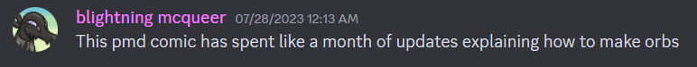

or: how reading a bunch of furry webcomics helped me understand the nature of art
earlier this week i was listening to an episode of lucky paper radio. it's normally a super chill mtg cube podcast (if you don't know what that is don't worry about it) but there's one episode every year where they allow themselves to be just a little bit bitter, and that's the "state of the game". basically they go through mark rosewater (lead designer of magic)'s yearly state of design article where he talks about the successes and failures of the year's expansions. the hosts discuss what they agree with, what they disagree with, and their overall thoughts on where magic is headed.
magic has grown an insane amount in the last 10 years, and there's been much talk in the community about how that's changed the way the game is made. importantly for the purposes of this article, part of the way through the episode the hosts start digging into the idea of "artistic integrity."
i won't get too deep into it because i'm sure there's people who don't play magic who will read this but basically, there was a set last year called unfinity. it was the fourth in the series of "un-sets", which were created to be sets that weren't tournament legal and didn't have to follow those rules, so they got to be really goofy: from caring about the artwork of cards to dexterity challenges to generating card abilities based on a website. that was the identity of these sets, and players loved that. unfinity marked a change, though. because these cards weren't strictly "legal" in magic's formats, a lot of players didn't see them as "real magic cards", and so even in casual games they refused to play against them. of course, that meant the sales of these sets were always more limited. that's bad news for a multi-billion dollar company like hasbro, so the team behind unfinity came up with an "ingenious" solution. just make a bunch of the cards legal.
this led to all the problems you can imagine it leading to (shoutouts to my friend pipsqueak who plays comet in legacy), but to the hosts of lucky paper radio this was not only a bad and confusing move for players but it also betrayed the entire point of un-sets. no longer were these sets a testing ground or a place for fun stuff, now it was just another set for commander players, a mismatched mess of a product that, in host andy's words, lacks artistic integrity. there was an artistic goal behind the old un-sets that has been lost, and players can "taste" that.
putting aside any of the specifics of unfinity, this idea that people can taste when a piece of art is lacking in integrity was interesting to me. a specific example andy cites is the fast and the furious. these movies always make an incredible amount of money, but he argues there's very few capital f Fans of the series out there. it exists to be chewed and then spit out because it sounded like a fun way to spend your friday. the things that captivate peoples' imaginations are things with that integrity, things that have a clear and definied vision.
of course, the problem with a clear and defined vision is that some people won't like it. and if some people won't like a thing then we can't sell it to them. bad news!
i'm sure this is not new information to you, reader. if you've ever thought critically about media in your entire life you've probably come to the conclusion that design by committee and creating things with only an incentive for maximum profit is, shockingly, bad! nothing wrong with enjoying a good blockbuster, of course. nothing is ever fully, truly designed by committee because there's always still singular writers and artists who have to make decisions about things. but if your primary goal for making a piece of art is to get people to buy it, people can tell, and they don't usually like it very much. (or at the very least they like it but don't love it.)
that goes to explaining why tons of people love independent media. in indie games and the books by small authors and weird niche bands you get to experience the creative vision of an individual or a small group of likeminded people. people who make the things they would like. people who take all their unique experiences, their influences, their everyday lives and the events that have shaped them into the complicated, unique people they are, and turn that into art. oftentimes that art is weird or inscrutable or just plain offputting, but that's exactly what makes it compelling. in the same way we can taste when something lacks artistic integrity, we can taste when something has it, even if we don't like the thing in question.
but what does that have to do with fanworks in particular? and when are we gonna talk about all the furry webcomics?
well, i listened to the podcast episode with the discussion of artistic integrity at a pretty funny time. because over the past few weeks i've gotten really into reading a bunch of pokemon mystery dungeon webcomics, and especially after marathoning a bunch of them cover to cover it had made me reflect on a similar thing just the day before.
i got really into pmd around spring of 2020, because i couldn't go outside so i might as well get obsessed with something. mentally i was in a pretty rough spot at the time (i hope understandably), so playing through a very simple but very emotionally resonant story, alongside the nostalgia of playing a pokemon game on my old ds, really hit home in a very profound way. it also certainly helped that the first new-ish game in the series in 5 years had just released a month or so ago, so the fandom was really revitalized. playing through each of those four games and talking about them with my newfound friend group is something i have so many fond memories of. i even played through gates to infinity all the way through in discord voice calls alongside a bunch of big fans of the game, which i'm sure contributes at least some to why that game is my favorite.
even when i was first playing through the games, though, i felt like a lot of my favorite things about the games weren't things the game spent much time on. i loved the characters, but there's a lot of missing pieces in their stories that are left for you to fill in. (what's the deal with that "resistance" that grovyle mentions one time in special episode 5 and never comes up again?) there's a lot of fascinating worldbuilding, but a lot of it is purely through implication (why are there abandoned human research labs in rescue team when there's no humans anywhere to be found?) to me it feels like pmd was practically tailor-made for fanon and fandom, to get your imagination racing about your self insert little guy and their friend and this fascinating setting that's so different from anything else in the pokemon franchise: there's a reason so many people have pmd oc's compared to main series pokemon oc's. and i of course was not immune to this, before i even finished explorers i was thinking of stories i could write or art i could draw and any number of other ideas. (i did make a pmd fanwork that year but it wasn't really something that explored the characters or the setting it was basically a 2 hour long shitpost.)
i did read some pmd fanfic and stuff during this time (shoutouts prism globe saga shoutouts victory fire i hope either of you get finished someday) but eventually my obsession faded into merely "i really really like this thing" rather than "i spend every waking moment thinking about this thing." but that was still enough to make me interested when my friend posted this discord message:
and that started the month-long binging of pmd webcomics i mentioned earlier.
but enough personal anecdotes. let's talk about how one of these comics in particular was so batshit insane that it made me want to write this article.
shinka: the last eevee is a webcomic written by silver lunarwing. it starts how it means to continue, with the following prologue:
I remember the sins that killed the Earth.
I remember our trees, turned to ash before our eyes.
Our homes fell to rot and ruin,
And our people prayed to the heavens, asking
"Dear God, why have you forsaken us?"
Our runes were wrong.
Our prophecies lied.
But in the face of a dying Earth,
One person sought salvation.
...The story I am about to tell you may not have a happy ending.
But it may as well be me who tells you.
And it may as well be you who listens.
For if you must take away one lesson,
Let it be this:
Darkness is coming,
But our fate is not set in stone.
pretty wild shit from a comic based on a series whose first antagonists were named "team meanies". and that's kind of exactly why i love it.
or, maybe "love" is a strong word. this comic goes from three kids running around town trying to stop common criminals to a gnostic death-cult that worships the bones of dead elder gods kidnapping and starving our main protagonist for use in a ritual sacrifice. i'll be honest, i'm not 100% on board for every single plot point in this story, it goes more than a little bit further in terms of tone than i tend to like in my pmd, and it hits a handful of pretty groan-worthy cliches (i'm sorry but you have to do a really good job with it to make me like a plot point that involves introducing the main character's long lost father.) but through all of that, this comic still captivated me. i always wanted to see what happened next, i got genuinely invested in these characters and this world and what was going to happen to it. in a way i really didn't expect to.
there's a lot you can say about this comic. it's strange and it's offputting and it's certainly "cringe". but what you cannot hold against it is a lack of artistic integrity. this author had vision. they knew what they wanted to make and they made it. who knows if they even cared if anyone else saw it. they don't care if you don't like it, they're going to keep making it. you feel that in every page, every line, every choice made in the creation of this story. that's not unique to shinka, of course, but through this comic's wild plot i felt it especially profoundly.
in the grand scheme though, is it that weird? i mean, this seems like a fairly standard campy dark fantasy plot. there certainly exist much weirder premises, much darker stories, much more of everything this comic does in countless other pieces of media. what makes this random pokemon fanfiction any more remarkable than anything else people make?
the answer to that is kind of nothing. i wouldn't call this comic high art, i don't even know i could confidently call it great storytelling. but i think that if this weren't a pokemon fanfiction, there would be quite a lot lost in its appeal. this isn't just one person's creative vision, it's this author's interpretation of a world so many of us are familiar with. it takes the familiar character designs and lore elements of pokemon and says "here's what i would do with them." and it turns out what they would do with them is creating an entire new magic system where astrology is real and also it will kill all of us.
what makes fandom special, as a concept, is that everyone approaches a piece of art from their own perspective. all that stuff that turns someone into a one-of-a-kind person that i mentioned earlier influences the way we consume media and interpret it, not just create it. you ever watch two movies or read two books or play two games back to back and then start thinking about them in relation to each other, even if they have nothing to do with each other? what would happen if this character met that character? what if this scene happened in this other style? what if you could play as this character in this game? or what about listening to a song and imagining a little music video in your head? any given time that's happened, you might well be the first person on earth to ever associate those things in that way. even subconsciously, we have pattern-seeking brains that drive us to make those connections, and whenever multiple people have the same experience, they're going to connect things to that experience in different ways.
just having a conversation with someone who's passionate about the same thing as you is great, but fanworks allow us to experience this in an even more profound way. through the medium of creation you get to step into the shoes of this person, and learn where their mind traveled when they saw that scene or learned about that element of the world. what they value about it and what they don't. what other things they like that they connect and fold into it. reading six full pmd webcomics over the course of a month has been especially fascinating for this reason: what influences do these authors share, and what directions do they go that are different? especially with pmd being such a blank canvas for unique fan interpretations, it's been genuinely really cool to see.
and that's not to mention what is to many people i'm sure the greatest part of fanworks: if the official creators don't go in the direction you liked, there will be fan authors who can pick up the slack.
all art is a reflection of its artist, of course, but what i love about fanworks is how much those elements are spotlighted, in taking the familiar and running with it in creative directions. is any given fanfiction author, dilligently chipping away at the high school au that's been festering in the back of their brain, a genius artist? probably not. but especially in an era of multi-billion dollar focus-grouped Cinematic Universes and Intellectual Properties gobbling up so much of the media landscape, i think it's easy to argue that that author has a great deal more artistic integrity. and whether or not you like what they're making, whether you think it's "cringe", or whether it's even any good, they are making it because they want to make it. that is the incentive, that is the point. they are painfully and hopelessly earnest. they are an artist, in the most pure sense of the word.
the world we live in has taught us that everything needs to be a means to an end, everything needs to be transactional, and if you're not good at something there's no sense in doing it. that betrays the fact that art, the act of creation and self-expression, is a vital part of what it means to even be a person. you are the only person who can create the things you create. fanworks may be self-indulgent and they may be "cringe", but, at least to me, they're a vital part of our culture. and if you want to make one, it holds no less value than anything else anyone's ever made.